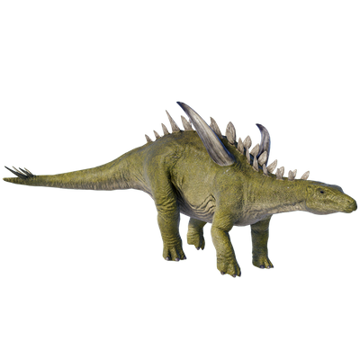

Useful Website
Gigantspinosaurus is a genus of herbivorous dinosaur notable for the large spines on its shoulders, which help to protect it from predators – in fact, its name translates to ‘giant-spined lizard’. It is part of the stegosaur family, weighing around 700kg and growing up to 7.7m in length with a strong jaw that helps it to chew the plants and shrubs it feeds on.
